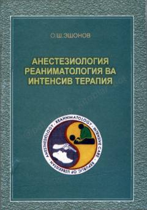

ARAnesteziologiya va reanimatologiya bo'yicha fundamental tibbiy darslik.
Ushbu darslik anesteziologiya, reanimatologiya va intensiv terapiyaning asosiy nazariy hamda amaliy jihatlarini qamrab oladi. Unda zamonaviy anesteziya usullari, shoshilinch tibbiy yordam ko'rsatish tartiblari va bemorlarni intensiv davolash metodlari batafsil yoritilgan.